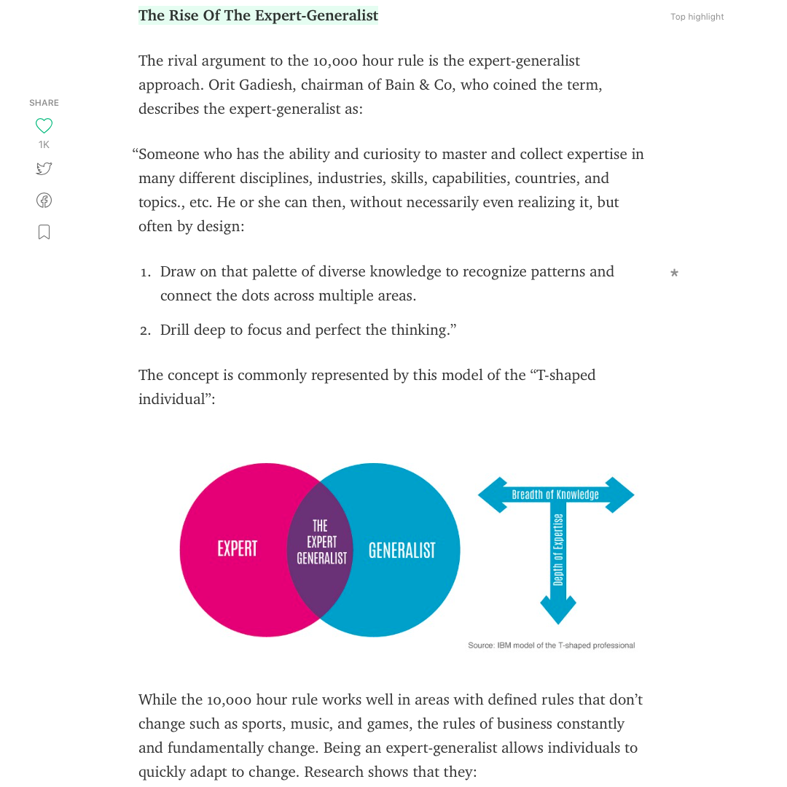

The Rise of the Expert Generalist
Perma🔗 (via @TriangleTodd)

Charlie Munger, Warren Buffet's business partner of over 40 years, takes an intentional wide and deep approach to learning, which has obviously been highly (financially) beneficial. A couple highlights from the article:
Bill Gates has said of Munger, “He is truly the broadest thinker I have ever encountered. From business principles to economic principles to the design of student dormitories to the design of a catamaran he has no equal... Our longest correspondence was a detailed discussion on the mating habits of naked mole rats and what the human species might learn from them.” Munger has, in short, been the ultimate expert-generalist.
He gives a basic definition of what an Expert Generalist is as:
“Someone who has the ability and curiosity to master and collect expertise in many different disciplines, industries, skills, capabilities, countries, and topics., etc. He or she can then, without necessarily even realizing it, but often by design:
- Draw on that palette of diverse knowledge to recognize patterns and connect the dots across multiple areas.
- Drill deep to focus and perfect the thinking.”
I admired a friend in high school, because it seemed that he could have conversations about all sorts of things with all sorts of people. Munger's style reminds me of him. I really like the intentional approach to this style of learning, and would claim to be trying a version this approach, personally. The full article is certainly worth reading, despite the (real) click-bait title.
- Prior: Eyvind Earle
- Next: Luchador Mask